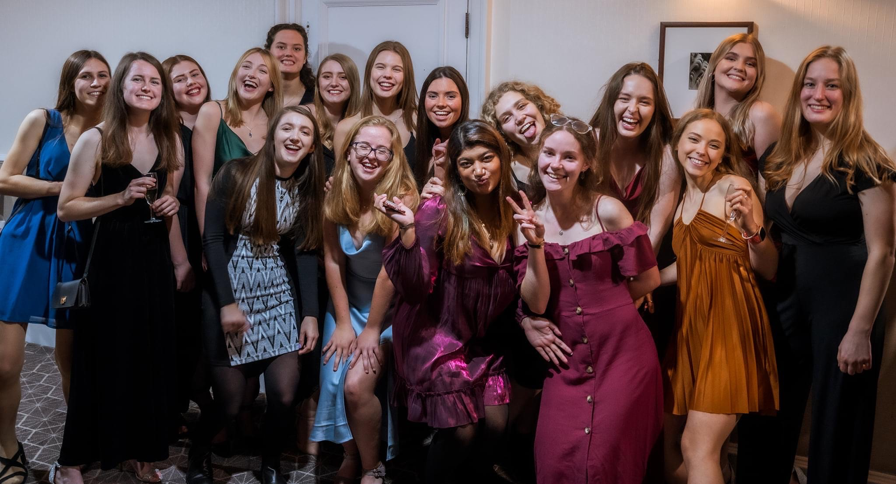
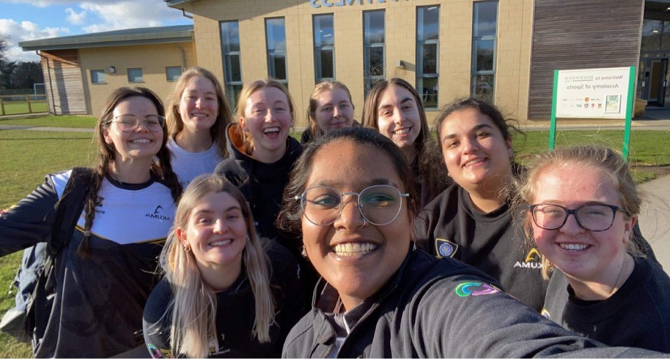
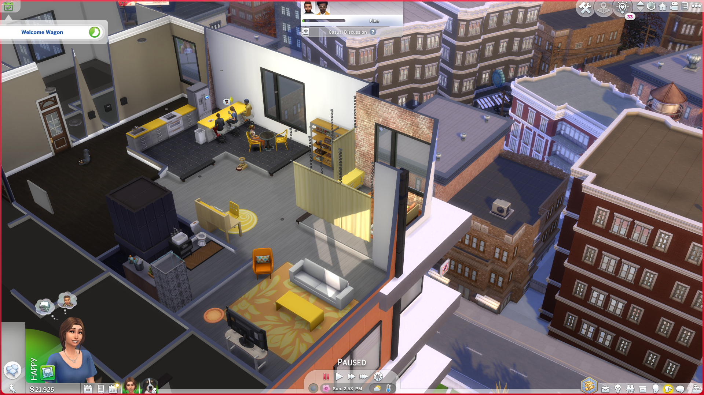

About Me
Hello, my name is Hannah Stutely and I am currently a third year student at the University of York, studying Interactive Media. I have thoroughly enjoyed the world of computers and design from a young age, creating all sorts of projects from Holiday Videos to making movies in my room, to my more professional projects since being at university. I have created this website in order to showcase a variety of the projects I have completed throughout my life but also to tell you a bit about myself outside of my studies. I am looking forward to my final year of studies and enter this year having achieved the highest mark in my cohort for year 2.


Outside of my studies I have a keen interest in cricket, being the Vice President of the university women's cricket club. I was an active participant in the club last year, being part of the team that won the East Yorkshire Women's Indoor League and was very keen to be part of the committee this year. To gain my role I had to create a short and fun video explaining why people should vote for me which allowed me to put some of the skills I have learnt at university to the test.

I have always loved the world of design and was first influenced by playing games like The Sims. When I was much younger I used to like to build forts and decorate them in my house and then I discovered The Sims where I could have the freedom to design any kind of building and decorate it in whichever way I wanted. This experience really sparked my love for design as I enjoyed being able to create something that I had imagined and see it come to life. Now I am able to use this passion and early design skills to inspire my new designs and protoypes.
